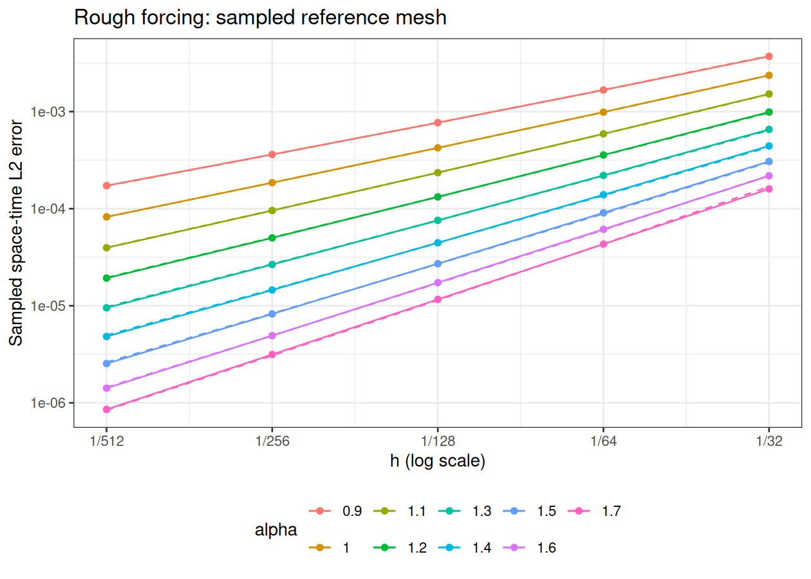
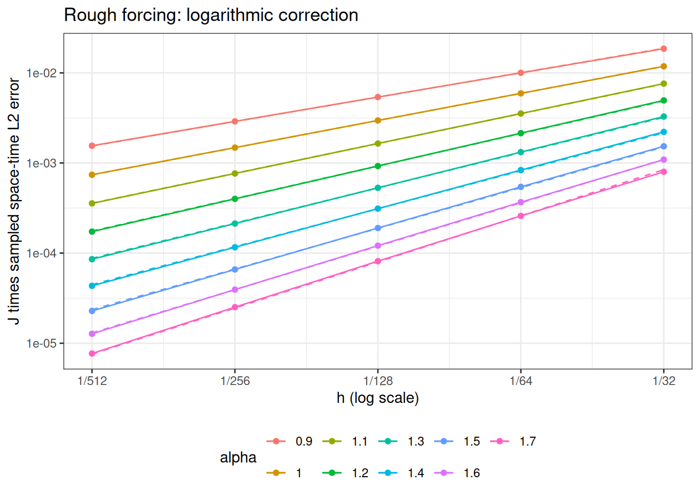

Experiments · Theory and functions
Knit loads the saved results and redraws the plots. The heavy
computation chunk has eval=FALSE and runs only when you
execute it manually. Run the chunks from top to bottom to generate new
results. Keep the parameters below consistent with the errors you
load.
# Initialize the R engine before purl() for interactive sessions.
knitr::opts_chunk$set(engine="R")
knitr::purl("brasilfunc.Rmd", output="brasilfunc.R", quiet=TRUE)## [1] "brasilfunc.R"source("brasilfunc.R")knitr::opts_chunk$set(message=FALSE, warning=FALSE, error=FALSE, cache=FALSE)library(ggplot2)This notebook applies the reference-mesh workflow of
cov_in_h_mat.Rmd to infinite rough forcing. On the tadpole
with stem length 1 and loop length 2, \[
u_t+\nu L^{\alpha/2}u=g,\qquad u(0)=0,\qquad
L=\kappa^2-\Delta_\Gamma,
\] \[
g=\sum_{j=1}^{\infty}\frac{\phi_j}{j},\qquad
\phi_j=0\text{ on the stem},\quad
\phi_j(x)=\sin(2^j\pi x)\text{ on the loop }[0,2].
\] This forcing belongs to L2 and has no positive spectral
Sobolev regularity. With \(\mu_j=\kappa^2+\pi^2 2^{2j}\) and \(a_j=\nu\mu_j^{\alpha/2}\), the continuum
solution is \[u(t)=\sum_{j=1}^{\infty}\frac{1-e^{-a_jt}}{j
a_j}\phi_j.\]
The stages are:
rSPDE BRASIL
coefficients and shifted sparse matrix solves, including the constant
contribution.This section describes how the reported sampled error is evaluated. The following step-by-step analysis explains the continuum error and derives the logarithmic correction used to compare convergence rates.
The sampled reference is explicitly truncated: \[ u_K(t)=\sum_{j=1}^{K}\frac{1-e^{-a_jt}}{j a_j}\phi_j. \] K stays fixed as the solver mesh is refined. It is a reference cutoff, distinct from the rational order m and from the mesh index J. The solver still assembles the original infinite forcing: on the aligned mesh \(h=2^{-J}\), modes \(j\ge J\) have exactly zero sine–hat load integrals. Therefore the load uses \(j=1,\ldots,J-1\) and \(U_0=0\). Requiring \(K\ge\max J-1\) also ensures that the truncated and infinite forcing have the same FEM load on every solver mesh.
The measured error is against \(u_K\), not literally against the entire infinite series. An upper bound for the omitted squared continuum space-time norm is \[ B_K=\frac{T}{\nu^2\pi^{2\alpha}}\, \frac{2^{-2\alpha(K+1)}}{(K+1)^2(1-2^{-2\alpha})}. \] In the exact continuum norm, the omitted modes are orthogonal to both the solver space and the retained reference modes, so \[ \|u-U_h^\tau\|^2=\|u_K-U_h^\tau\|^2+\|u-u_K\|^2, \qquad \|u-u_K\|^2\le B_K. \] The bound is recorded as a diagnostic and is not added to the plotted error. Reference-mesh and reference-time quadrature errors must be checked separately. The original eight-alpha run passed those checks in DOCS/NAP.
Let E contain the values of the retained analytic eigenfunctions at
reference nodes, \(C_{\rm ref}\) be the
reference P1 mass matrix, and \(\Psi\)
evaluate solver hat functions at those nodes. At reference time \(s_q\), use the new solver state \(U^{k(q)}\) on \((t_{k(q)-1},t_{k(q)}]\). The error is \[
E_{\mathrm{sampled}}^2=
\sum_q(s_q-s_{q-1})
\big(Ec(s_q)-\Psi U^{k(q)}\big)^\top C_{\rm ref}
\big(Ec(s_q)-\Psi U^{k(q)}\big).
\] This is a right-endpoint reference-time sum and a consistent
reference-mass norm, just as in cov_in_h_mat.Rmd. The
analytic time coefficients are evaluated at reference times; there is no
numerical PDE solve on the reference mesh.
prepare_reference_error() compresses this quadratic norm
into a coarse metric, a projected reference basis, and a residual Gram
matrix. The compiled kernel evaluates that same sampled norm and
advances every shifted-solve FEM time step. It uses no analytic
time-integrated error formula and adds no infinite-tail error.
Small-case diagnostics compare it with direct reference-grid integration
and the R error routine used by the smooth notebook.
To save memory and work, the matrices and reference mesh represent the invariant quarter-loop \([0,1/2]\). Signed reflections reconstruct the full loop, while the stem is zero. Matrices carry a factor of four so that their mass norms equal the full-graph norms. This preserves the sampled reference calculation; it is a symmetry reduction, not a discrete modal time-stepping solver.
The reference grid must resolve the highest retained frequency. The
code requires reference_J >= reference_cutoff + 2,
giving at least eight elements per shortest wavelength. This prevents
the cutoff modes from vanishing or aliasing on an inadequately resolved
dyadic reference mesh.
This section derives the logarithmic correction from the rough forcing and the modes unresolved by each solver mesh. The continuum tail is used in the rate analysis. The reported errors are evaluated by the sampled reference calculation described above, with a fixed cutoff \(K\).
Write \[ b_j(t)=\frac{1-e^{-a_jt}}{j a_j},\qquad a_j=\nu(\kappa^2+\pi^2 2^{2j})^{\alpha/2}, \qquad u(t)=\sum_{j=1}^{\infty}b_j(t)\phi_j. \] All spatial inner products and norms below are on the full graph \(\Gamma\). The symmetry reduction changes the matrix size, while retaining this full-graph norm.
The functions \(\phi_j\) are orthonormal. Consequently, \[ \|g\|_{L_2}^2=\sum_{j=1}^{\infty}\frac{1}{j^2}<\infty. \] In a positive spectral Sobolev norm, however, \[ \|g\|_{\dot H^s}^2 =\sum_{j=1}^{\infty}\frac{\mu_j^s}{j^2}=\infty, \qquad s>0, \] because \(\mu_j\asymp 2^{2j}\) and exponential growth dominates \(j^2\). Thus \(g\in L_2=\dot H^0\), but \(g\) belongs to no positive-order spectral Sobolev space. The same infinite \(g\) is used on every mesh and for every \(\alpha\); its regularity is not improved by refinement.
Each coefficient solves the scalar equation \[ b_j'(t)+a_jb_j(t)=\frac1j,\qquad b_j(0)=0, \] which gives the explicit \(b_j(t)\) above. This is an exact representation of the continuum solution, even though it is an infinite series.
Fix the uniform mesh \(h_J=2^{-J}\) and let \(\psi_i\) be its P1 hat functions. The load entry is \[ F_i=(g,\psi_i) =\sum_{j=1}^{\infty}\frac1j(\phi_j,\psi_i). \] For these frequencies and this aligned uniform mesh, \[ (\phi_j,\psi_i)=0\qquad\text{for every }i\text{ and every }j\ge J. \] The integrals vanish by cancellation of the sine against the hats; at the loop junction the two incident loop pieces are combined. Therefore \[ \boxed{F_i=\sum_{j=1}^{J-1}\frac1j(\phi_j,\psi_i).} \] Every remaining sine–hat integral has an analytic formula. A finite calculation therefore gives the load for the original infinite forcing, up to floating-point arithmetic. This is not the same as replacing the continuum forcing by a truncated series.
For example, at a loop interior node \(x_i\), with \(k_j=2^j\pi\), \[ (\phi_j,\psi_i) =h_J\left(\frac{\sin(k_jh_J/2)}{k_jh_J/2}\right)^2\sin(k_jx_i). \] The solver forms the constant load using these retained sine–hat integrals and the coefficients \(1/j\).
Every \(v_h\in V_{h_J}\) is a linear combination of the hats, so \[ (\phi_j,v_h)=0\qquad(j\ge J). \] In particular, the numerical solution has zero component in each of these directions. This does not make those modes disappear from the true solution: \(b_j(t)>0\) for \(t>0\).
More strongly, since \(\|\phi_j\|_{L_2}=1\), \[ \|b\phi_j-v_h\|_{L_2}^2=|b|^2+\|v_h\|_{L_2}^2, \qquad j\ge J. \] Thus the best FEM approximation to that isolated mode is zero. Refining the mesh moves the cutoff to higher frequencies. Modes below the cutoff become accessible through nonzero projections, but the sines themselves are still not piecewise linear and are not represented exactly.
The continuum target is \[ \boxed{ E=\|u-U_{h,m}^{\tau}\|_{L_2(0,T;L_2(\Gamma))} =\left(\int_0^T\int_\Gamma |u(s,t)-U_{h,m}^{\tau}(s,t)|^2\,ds\,dt\right)^{1/2}. } \] The right-constant reconstruction is \[ U_{h,m}^{\tau}(t)=U_{h,m}^{n},\qquad t\in(t_{n-1},t_n], \quad t_n=n\tau. \] It is an error over the whole graph and time interval, not only an error at mesh nodes or at the final time. The reported sampled error approximates this target using the finite reference \(u_K\), the reference mass matrix, and the reference-time sum. For brevity write \(U_h(t)\) for the right-constant reconstruction in the following spatial decompositions. When emphasizing the dyadic mesh, write \(E_{h_J}=E\).
Split the exact solution as \[ u=u_{<J}+u_{\ge J},\qquad u_{<J}=\sum_{j=1}^{J-1}b_j\phi_j,\qquad u_{\ge J}=\sum_{j=J}^{\infty}b_j\phi_j. \] The tail starts at \(j=J\), including that index. It is orthogonal both to \(u_{<J}\) and to \(U_h\). Hence \[ \boxed{ \|u(t)-U_h(t)\|_{L_2}^2 =\|u_{<J}(t)-U_h(t)\|_{L_2}^2 +\sum_{j=J}^{\infty}b_j(t)^2. } \] It is the squared contributions that add; their square roots do not add in this identity.
Orthonormality gives the spatial norm directly from the coefficients. Integrating in time, and interchanging the nonnegative sum and integral, \[ E_{\mathrm{tail}}^2 =\sum_{j=J}^{\infty}\frac{1}{j^2a_j^2} \int_0^T(1-e^{-a_jt})^2\,dt. \] Expanding the square and integrating the exponentials yields \[ \boxed{ E_{\mathrm{tail}}^2 =\sum_{j=J}^{\infty}\frac{1}{j^2a_j^2} \left[T-\frac{2(1-e^{-a_jT})}{a_j} +\frac{1-e^{-2a_jT}}{2a_j}\right]. } \] This identity expresses the continuum tail through its coefficients. It will be used below to derive the rate correction; the sampled-error routine does not evaluate or add this infinite series.
The sampled reference retains the modes through \(K\). Its omitted part is \[
u-u_K=\sum_{j=K+1}^{\infty}b_j\phi_j.
\] Since \((1-e^{-a_jt})^2\le1\)
and \(a_j\ge\nu\pi^\alpha 2^{\alpha
j}\), \[
\|u-u_K\|_{L_2(0,T;L_2(\Gamma))}^2
\le\frac{T}{\nu^2\pi^{2\alpha}}
\sum_{j=K+1}^{\infty}\frac{2^{-2\alpha j}}{j^2}.
\] Using \(j^{-2}\le(K+1)^{-2}\)
and summing the geometric series gives \[
\|u-u_K\|_{L_2(0,T;L_2(\Gamma))}^2
\le B_K:=\frac{T}{\nu^2\pi^{2\alpha}(K+1)^2}
\frac{2^{-2\alpha(K+1)}}{1-2^{-2\alpha}}.
\] Because \(K\ge\max J-1\),
every omitted mode is orthogonal to the solver space on every tested
mesh and to the retained reference modes. Thus, in the continuum norm,
\[
E_{h_J}^2=\|u_K-U_h\|_{L_2(0,T;L_2(\Gamma))}^2
+\|u-u_K\|_{L_2(0,T;L_2(\Gamma))}^2.
\] The code computes \(B_K\) and
checks \(B_K/E_{\mathrm{sampled}}^2\)
against max_tail_squared_fraction. It does not add \(B_K\) or an infinite-tail sum to the
measured error. The bound controls reference truncation; reference-mesh
and reference-time refinement separately check the quadrature used to
approximate \(\|u_K-U_h\|\).
For \(0<\alpha<2\), the error estimate has the form \[ \|u-U_{h,m}^{\tau}\|_{L_2(0,T;L_2(\Gamma))} \lesssim\tau+ h^{\min\{s_0+\alpha/2,\ s_f+\alpha,\ 2\}-\epsilon} +\delta_m. \] Here \(u_0=0\) permits arbitrarily large \(s_0\), while the forcing only permits \(s_f=0\). Thus, for sufficiently small \(\epsilon>0\), \[ \boxed{E\lesssim\tau+h^{\alpha-\epsilon}+\delta_m.} \] Under the rational-approximation assumptions, \(\delta_m\) has root-exponential decay with rational order \(m\). A fixed positive diffusion coefficient \(\nu\) changes constants, while preserving these orders. The case \(\alpha=2\) admits an exact rational representation and the bound \(\tau+h^2\); this study uses \(0<\alpha<2\).
The sampled quantity approximates the norm on the estimate’s left-hand side, with the reference truncation and quadrature qualifications above. The resolved/unresolved split in Step 4 is an orthogonal identity for that continuum norm. Its resolved part can contain temporal, spatial, and rational errors together; it does not isolate the three upper-bound terms. Reference truncation, reference quadrature, linear-solve, and arithmetic errors require their own accuracy checks.
The spatial experiment keeps \(\tau\) and \(m\) fixed along each mesh curve and selects them to limit their influence over the tested range. Under further refinement, fixed temporal or rational errors can eventually mask spatial convergence. The observed spatial slopes provide numerical evidence for the predicted order; a finite set of slopes is not a proof of the bound.
For fixed \(T>0\), \(\nu>0\), and \(\alpha>0\), the bracket in the tail formula tends to \(T\) as \(j\to\infty\), and \(a_j\asymp2^{\alpha j}\). Hence \[ E_{\mathrm{tail}}^2\asymp \sum_{j=J}^{\infty}\frac{2^{-2\alpha j}}{j^2}. \] The first term bounds this sum from below. Replacing \(j^{-2}\) by \(J^{-2}\) and summing the geometric series bounds it from above: \[ \frac{2^{-2\alpha J}}{J^2} \le\sum_{j=J}^{\infty}\frac{2^{-2\alpha j}}{j^2} \le\frac{2^{-2\alpha J}}{J^2(1-2^{-2\alpha})}. \] Therefore \[ \boxed{E_{\mathrm{tail}}\asymp\frac{2^{-\alpha J}}{J} =\frac{h_J^\alpha}{\log_2(1/h_J)}.} \] The factor \(h_J^\alpha\) comes from damping the high frequencies; \(1/J\) comes from the forcing amplitudes \(1/j\). Since the tail is an orthogonal error contribution, \(E\ge E_{\mathrm{tail}}\). This establishes a lower bound for the total error and motivates the model \(E_{h_J}\approx C_\alpha h_J^\alpha/J\). The tail calculation alone does not prove a matching upper bound for the other contributions or show that a tested mesh range has reached this regime.
The model is compatible with the error estimate because \[ \frac{h_J^\alpha/J}{h_J^{\alpha-\epsilon}} =\frac{h_J^\epsilon}{J}\longrightarrow0. \] An upper bound permits the actual error to decay faster. At the same time, for every \(\eta>0\), \[ \frac{h_J^\alpha/J}{h_J^{\alpha+\eta}} =\frac{h_J^{-\eta}}{J}\longrightarrow\infty. \] Thus the tail rules out a higher algebraic order \(\alpha+\eta\) for this fixed forcing, while permitting the logarithmic improvement.
Under the model \(E_{h_J}\approx C_\alpha h_J^\alpha/J\), halving the mesh gives \[ \frac{E_{h_J}}{E_{h_{J+1}}}\approx 2^\alpha\frac{J+1}{J}. \] The two-mesh observed order is therefore \[ \log_2\frac{E_{h_J}}{E_{h_{J+1}}} \approx\alpha+\log_2\left(\frac{J+1}{J}\right)>\alpha. \] The raw slope can exceed \(\alpha\) even when this model holds exactly. Multiplying by \(J\) gives \(J E_{h_J}\approx C_\alpha h_J^\alpha\), which motivates the corrected regression below. This correction removes a factor associated with the particular forcing; the error estimate does not assert a universal \(1/J\) factor for all \(L_2\) data.
Specifically, the regressions are \[ \log_{10}E_h=s_{\rm raw}\log_{10}h+b_{\rm raw}, \qquad \log_{10}(J E_h)=s_{\rm corrected}\log_{10}h+b_{\rm corrected}. \] The corrected slope is compared with \(\alpha\). Here \(E_h\) in the regressions is the measured sampled error against \(u_K\). Multiplication by \(J=\log_2(1/h)\) is applied after computing that error; it is a correction of the rate comparison, not a change to the error norm or an addition of the tail bound.
Lower modes are smooth and can contribute a second-order spatial term. Comparing that scale with the tail gives the ratio \[ \frac{h_J^2}{h_J^\alpha/J}=J h_J^{2-\alpha}. \] For fixed \(\alpha<2\) it eventually tends to zero, but the separation can be slow when \(\alpha\) is close to \(2\). This is consistent with a remaining lower-mode contribution over a finite mesh range; it does not establish the cause of a particular observed slope. Corrected slopes near \(\alpha\), together with sufficiently small other errors, support the predicted regularity-dependent spatial order.
T_final <- 1
kappa <- 4
diffusion <- 1
alpha_vector <- seq(0.9,1.7,0.1)
J_vector <- 5:9
# One solver time step for every alpha and spatial mesh.
time_step <- 8e-7
m_fixed <- 14L
reference_cutoff <- 16L
reference_J <- 18L
reference_time_step <- 1e-5
fit_J <- 5:9
workers <- 9L
max_tail_squared_fraction <- 0.002The solver time step is fixed across all alphas and spatial meshes. It is the smallest step from the previous alpha-dependent schedule. At \(T=1\), each solution takes 1,250,000 backward Euler steps. Time-refinement checks across the complete nine-alpha grid remain to be done. After changing the time step, run the recompute chunk before loading results.
output_file <- "data_files/rough_h_as_in_mat_results.rds"
stopifnot(length(alpha_vector)>0L,!anyDuplicated(alpha_vector),
all(is.finite(alpha_vector)),all(alpha_vector>0 & alpha_vector<2),
length(time_step)==1L,is.finite(time_step),time_step>0,
length(J_vector)>=2L,!anyDuplicated(J_vector),
all(J_vector==as.integer(J_vector)),all(J_vector>=3L & J_vector<=20L),
all(fit_J %in% J_vector),length(fit_J)>=2L,
reference_cutoff>=max(J_vector)-1L,reference_J>max(J_vector),
length(m_fixed)==1L,is.finite(m_fixed),m_fixed==as.integer(m_fixed),
workers>=1L,workers==as.integer(workers),
is.finite(T_final),T_final>0,is.finite(kappa),kappa>0,
is.finite(diffusion),diffusion>0,
is.finite(max_tail_squared_fraction),max_tail_squared_fraction>0)
for (alpha in alpha_vector)
rough_rational_coefficients(alpha/2,m_fixed)
reference <- rough_sampled_reference(reference_J,reference_cutoff)
rough_compile_sampled_solver()
meshes <- lapply(J_vector,function(J) rough_tau_mesh(J,kappa))
projections <- lapply(meshes,function(mesh) {
Psi <- rough_sampled_fem_basis(mesh$J,reference$x)
prepare_reference_error(Psi,reference$C,reference$basis)
})
cases <- expand.grid(mesh_index=seq_along(J_vector),
alpha_index=seq_along(alpha_vector))
run_case <- function(i) {
h_index <- cases$mesh_index[i]
a <- cases$alpha_index[i]
value <- rough_sampled_error(meshes[[h_index]],reference,
projections[[h_index]],alpha_vector[a],time_step,
reference_time_step,m_fixed,diffusion,T_final)
value$final_state <- NULL
value$J <- J_vector[h_index]
value$alpha <- alpha_vector[a]
value
}
safe_case <- function(i) tryCatch(run_case(i),
error=function(e) list(failed=TRUE,message=conditionMessage(e)))
values <- if (workers>1L && .Platform$OS.type=="unix")
parallel::mclapply(seq_len(nrow(cases)),safe_case,
mc.cores=min(workers,nrow(cases)),mc.preschedule=FALSE) else
lapply(seq_len(nrow(cases)),safe_case)
failed <- vapply(values,function(v) !is.list(v) || isTRUE(v$failed),logical(1))
if (any(failed)) stop("Sampled reference experiment failed: ",
paste(vapply(values[failed],function(v)
if(is.list(v)) v$message else as.character(v),character(1)),collapse="; "))
errors <- matrix(vapply(values,`[[`,numeric(1),"error"),
nrow=length(J_vector),ncol=length(alpha_vector))
corrected <- errors*J_vector
axis <- 2^-J_vector
fit <- which(J_vector %in% fit_J)
slope <- function(e) unname(coef(lm(log10(e[fit])~log10(axis[fit])))[2L])
rates <- data.frame(alpha=alpha_vector,reference=alpha_vector,
raw=apply(errors,2L,slope),corrected=apply(corrected,2L,slope))
cutoff_squared_bound <- T_final/(diffusion^2*pi^(2*alpha_vector)) *
2^(-2*alpha_vector*(reference_cutoff+1))/
((reference_cutoff+1)^2*(1-2^(-2*alpha_vector)))
tail_fraction <- sweep(errors^2,2L,cutoff_squared_bound,
function(squared,bound) bound/squared)
if (any(tail_fraction>max_tail_squared_fraction))
stop("Reference cutoff budget failed; increase cutoff and resolve it spatially.")
actual_steps <- vapply(seq_along(alpha_vector),function(a)
values[[(a-1L)*length(J_vector)+1L]]$tau,numeric(1))
result <- list(parameters=list(study="rough_h_sampled_reference",
T_final=T_final,kappa=kappa,diffusion=diffusion,alpha=alpha_vector,
J=J_vector,h=axis,time_steps=actual_steps,m=m_fixed,
reference_cutoff=reference_cutoff,reference_J=reference_J,
reference_h=reference$h,reference_tau=values[[1L]]$reference_tau,
reference_nodes=nrow(reference$C),fit_J=fit_J,
max_tail_squared_fraction=max_tail_squared_fraction,
forcing="fixed infinite sum phi_j/j; zero on stem",
reconstruction="right-constant backward Euler",
error="sampled finite-series reference with consistent P1 reference mass"),
coefficient_source="rSPDE BRASIL",
rSPDE_version=as.character(utils::packageVersion("rSPDE")),
errors=errors,corrected_errors=corrected,rates=rates,cases=values,
cutoff_squared_bound=cutoff_squared_bound,
max_tail_squared_fraction=apply(tail_fraction,2L,max),
source_hashes=tools::md5sum(c("brasilfunc.Rmd","cov_in_h_rough_as_in_mat.Rmd")),
generated_at=format(Sys.time(),"%Y-%m-%d %H:%M:%S %Z",tz="Asia/Riyadh"))
dir.create(dirname(output_file),recursive=TRUE,showWarnings=FALSE)
saveRDS(result,output_file)r <- readRDS("data_files/rough_h_as_in_mat_results.rds")
errors <- r$errors
if (ncol(errors) != length(alpha_vector))
stop("Saved errors use a different alpha grid. Run the recompute chunk before plotting.")
corrected <- errors * J_vector
axis <- 2^-J_vector
fit <- which(J_vector %in% fit_J)
slope <- function(e) unname(coef(lm(log10(e[fit]) ~ log10(axis[fit])))[2L])
rates <- data.frame(alpha=alpha_vector, reference=alpha_vector,
raw=apply(errors, 2L, slope), corrected=apply(corrected, 2L, slope))
figure_dir <- "data_files/rough_h_as_in_mat"knitr::kable(data.frame(T=T_final, kappa=kappa, diffusion=diffusion, m=m_fixed,
tau=time_step,
cutoff=reference_cutoff, reference_J=reference_J,
reference_h=2^-reference_J, reference_tau=reference_time_step))| T | kappa | diffusion | m | tau | cutoff | reference_J | reference_h | reference_tau |
|---|---|---|---|---|---|---|---|---|
| 1 | 4 | 1 | 14 | 8e-07 | 16 | 18 | 3.8e-06 | 1e-05 |
knitr::kable(data.frame(alpha=alpha_vector,
omitted_squared_bound=formatC(r$cutoff_squared_bound, format="e", digits=6),
max_omitted_squared_fraction=formatC(r$max_tail_squared_fraction, format="e", digits=6)))| alpha | omitted_squared_bound | max_omitted_squared_fraction |
|---|---|---|
| 0.9 | 3.799543e-13 | 1.272851e-05 |
| 1.0 | 2.720955e-14 | 4.014862e-06 |
| 1.1 | 1.965362e-15 | 1.254517e-06 |
| 1.2 | 1.429376e-16 | 3.856636e-07 |
| 1.3 | 1.045366e-17 | 1.154157e-07 |
| 1.4 | 7.680184e-19 | 3.304582e-08 |
| 1.5 | 5.663889e-20 | 8.799881e-09 |
| 1.6 | 4.190104e-21 | 2.092261e-09 |
| 1.7 | 3.108006e-22 | 4.256527e-10 |
The solver meshes are \(h=2^{-J}\) for \(J\in\) 5, 6, 7, 8, 9. Every alpha and spatial mesh uses the same rational order and solver time step.
dir.create(figure_dir,recursive=TRUE,showWarnings=FALSE)
alpha_colors <- setNames(scales::hue_pal()(length(alpha_vector)), as.character(alpha_vector))
for (use_correction in c(FALSE,TRUE)) {
plotted <- if(use_correction) corrected else errors
frame <- expand.grid(row=seq_along(axis),column=seq_along(alpha_vector))
frame$h <- axis[frame$row]
frame$error <- as.vector(plotted)
frame$alpha <- factor(alpha_vector[frame$column],levels=alpha_vector)
guide <- frame
for(a in seq_along(alpha_vector)) {
model <- axis^alpha_vector[a]
if(!use_correction) model <- model/J_vector
constant <- mean(plotted[,a]/model)
guide$error[guide$column==a] <- constant*model
}
plot <- ggplot2::ggplot(frame,ggplot2::aes(h,error,color=alpha,group=alpha)) +
ggplot2::geom_line(data=guide,linetype="dashed") +
ggplot2::geom_line()+ggplot2::geom_point() +
ggplot2::scale_x_log10(breaks=axis,
labels=function(x) paste0("1/",round(1/x)))+
ggplot2::scale_y_log10()+
ggplot2::scale_color_manual(values=alpha_colors, drop=FALSE)+
ggplot2::labs(x="h (log scale)",
y=if(use_correction) "J times sampled space-time L2 error" else
"Sampled space-time L2 error",color="alpha",
title=if(use_correction) "Rough forcing: logarithmic correction" else
"Rough forcing: sampled reference mesh")+
ggplot2::theme_bw()+ggplot2::theme(legend.position="bottom")
name <- if(use_correction) "corrected" else "raw"
for(extension in c("png","pdf"))
ggplot2::ggsave(file.path(figure_dir,paste0(name,".",extension)),plot,
width=7,height=5,dpi=180,bg="white")
}knitr::include_graphics(file.path(figure_dir, "raw.png"))
Both axes use base-10 logarithmic scales, with ticks labelled by h and the error itself. Solid lines and markers show the sampled errors. Dashed curves are \(C_\alpha h^\alpha/J\), not \(C h^2\): changing the error-evaluation workflow does not make the rough data smooth. Each dashed curve averages the prescribed reference curves anchored at all plotted errors, so \(C_\alpha\) is the arithmetic mean of \(E_h/(h^\alpha/J)\) over all plotted meshes. The rate model is prescribed.
knitr::include_graphics(file.path(figure_dir, "corrected.png"))
The second plot has the same h axis and uses \(J E_h\) on the logarithmic vertical axis. Its dashed lines are \(C_\alpha h^\alpha\). Multiplying by \(J=\log_2(1/h)\) removes the model’s leading logarithmic factor. Regressions freely estimate slopes of \(\log_{10}E_h\) and \(\log_{10}(J E_h)\) against \(\log_{10}h\) on the fit meshes. The dashed curves are comparison guides, not certified upper bounds.
The combined rational and spatial convergence figure compares these corrected errors with the isolated rational-order study.
knitr::kable(rates, digits=6)| alpha | reference | raw | corrected |
|---|---|---|---|
| 0.9 | 0.9 | 1.105624 | 0.894521 |
| 1.0 | 1.0 | 1.210258 | 0.999155 |
| 1.1 | 1.1 | 1.315118 | 1.104014 |
| 1.2 | 1.2 | 1.420420 | 1.209316 |
| 1.3 | 1.3 | 1.525869 | 1.314766 |
| 1.4 | 1.4 | 1.630022 | 1.418919 |
| 1.5 | 1.5 | 1.729287 | 1.518184 |
| 1.6 | 1.6 | 1.817354 | 1.606251 |
| 1.7 | 1.7 | 1.886963 | 1.675860 |
knitr::kable(data.frame(h=axis, errors, check.names=FALSE),
col.names=c("h", paste0("alpha=", alpha_vector)),
format.args=list(scientific=TRUE, digits=6))| h | alpha=0.9 | alpha=1 | alpha=1.1 | alpha=1.2 | alpha=1.3 | alpha=1.4 | alpha=1.5 | alpha=1.6 | alpha=1.7 |
|---|---|---|---|---|---|---|---|---|---|
| 3.1250e-02 | 3.7125e-03 | 2.3644e-03 | 1.5202e-03 | 9.899e-04 | 6.552e-04 | 4.426e-04 | 3.065e-04 | 2.181e-04 | 1.597e-04 |
| 1.5625e-02 | 1.6695e-03 | 9.8750e-04 | 5.8990e-04 | 3.571e-04 | 2.201e-04 | 1.390e-04 | 9.060e-05 | 6.120e-05 | 4.310e-05 |
| 7.8125e-03 | 7.6990e-04 | 4.2340e-04 | 2.3510e-04 | 1.322e-04 | 7.570e-05 | 4.450e-05 | 2.710e-05 | 1.730e-05 | 1.160e-05 |
| 3.9063e-03 | 3.6200e-04 | 1.8520e-04 | 9.5700e-05 | 5.000e-05 | 2.660e-05 | 1.450e-05 | 8.200e-06 | 4.900e-06 | 3.100e-06 |
| 1.9531e-03 | 1.7280e-04 | 8.2300e-05 | 3.9600e-05 | 1.930e-05 | 9.500e-06 | 4.800e-06 | 2.500e-06 | 1.400e-06 | 9.000e-07 |
The diagnostics and rejected parameter choices are in
/home/rierasl/Desktop/DOCS/NAP/rough_h_sampled_reference_2026-11-01.
They include comparison with the existing analytic-error method at the
same solver settings, doubling the reference spatial resolution,
increasing the series cutoff, halving the reference-time step, and
checking solver-time refinement. A complete numerical spectrum bounds
the isolated rational contribution. Small cases compare the sampled
kernel with the smooth notebook’s error routine, direct reference-grid
integration, and full-graph mass integration.
The original selected parameters kept those discrepancies below the documented diagnostic thresholds. They do not turn the sampled norm into an exact continuum norm.